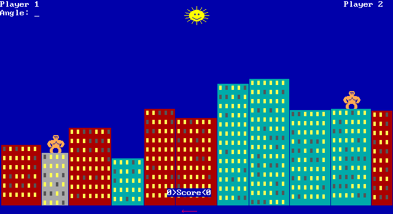

Vergleich läuft …
Gleiche Gebäudedaten und Fensterbelegung, unabhängig gerenderte Pixel. Das Referenzbild stammt aus LaunchBox. Die reproduzierbare Szene prüft die Darstellung, nicht die historische Zufallsfolge oder Animationszeiten.

Layoutprüfung läuft …